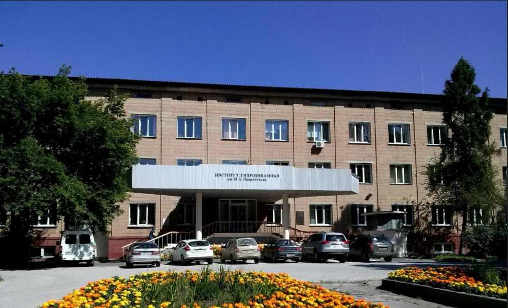

Кафедра физики сплошных сред
Chair of Continuous Media Physics
Научная школа академика М. А. Лаврентьева: гидро- и газодинамика, механика взрыва и ударных волн, физика экстремальных состояний вещества. Студенты работают в лабораториях Института гидродинамики СО РАН начиная со 2 курса.
The scientific school of Academician M. A. Lavrentiev: hydro- and gas dynamics, mechanics of explosions and shock waves, physics of extreme states of matter. Students join the laboratories of the Lavrentyev Institute of Hydrodynamics from their second year.
Чем мы занимаемся
What we work on
Студенты участвуют в исследованиях лабораторий Института гидродинамики им. М. А. Лаврентьева СО РАН по шести основным направлениям.
Students take part in research in the laboratories of the Lavrentyev Institute of Hydrodynamics SB RAS across six main directions.
Импульсные процессы при экстремальных давлениях и температурах
Pulsed processes at extreme pressures and temperatures
Физика и механика процессов при интенсивном ударном воздействии; кумулятивные процессы.
Physics and mechanics of processes under intense impact; cumulative processes.
02Газодинамика
Gas dynamics
Сверхзвуковые течения, ударные волны, вихревые движения жидкости и газа.
Supersonic flows, shock waves, vortex motion of fluids and gases.
03Подводные взрывы и кавитация
Underwater explosions and cavitation
Динамика пузырей и кавитационных полостей, гидродинамика взрывных процессов.
Bubble and cavity dynamics, hydrodynamics of explosive processes.
04Численное моделирование
Numerical modelling
Ударные волны и детонация в сплошных средах, математическое моделирование вихревых течений.
Shock waves and detonation in continuous media, mathematical modelling of vortex flows.
05Взрывные технологии и новые материалы
Explosive technologies and new materials
Сварка взрывом, ударный синтез, динамическое уплотнение порошков.
Explosive welding, shock synthesis, dynamic powder compaction.
06Диагностика быстропротекающих процессов
Diagnostics of fast processes
Импульсная рентгенография, обработка изображений, томография многофазных сред.
Pulsed radiography, image processing, tomography of multiphase media.
Кафедра, основанная Лаврентьевым
A chair founded by Lavrentiev
Кафедра создана в 1965 году академиком М. А. Лаврентьевым — основателем Сибирского отделения АН и Новосибирского Академгородка — для подготовки специалистов по физике сплошных сред, гидро- и газодинамике и механике импульсных процессов, включая взрывы в газообразных и конденсированных средах.
The chair was founded in 1965 by Academician M. A. Lavrentiev to train specialists in continuum physics, hydro- and gas dynamics and the mechanics of pulsed processes, including explosions in gaseous and condensed media.

Шар в струе воды
A ball in a water jet
В 2010 году администрация Советского района поставила задачу создать фонтан, в струе которого шар удерживается без опор снизу, сверху и сбоку: о таком фонтане для Академгородка мечтал М. А. Лаврентьев. Задача решена теоретически и экспериментально.
In 2010 the administration of the Sovetsky district posed the task of building a fountain where a ball hovers in the jet with no support from below, above or the sides — a fountain M. A. Lavrentiev once wished for the Akademgorodok. The problem was solved both theoretically and experimentally.
Ждём вас в нашей команде
We hope to see you in our team
Набор на кафедру: студенты 3 курса бакалавриата, а также студенты 2 курса для выполнения курсовых работ.
Admission: third-year bachelor students, as well as second-year students for coursework projects.
Последние события
Latest news
Кафедра ФСС на Физфесте
The Chair of Continuous Media Physics at Physfest
Стенд кафедры: плакат о кафедре, демонстрационные установки и материалы о рентгеновских установках.
The chair’s stand: a poster about the chair, demonstration setups and materials on X-ray facilities.
Магистранты кафедры — на Форуме будущих технологий в Москве
Master students take part in the Future Technologies Forum in Moscow
Студенты магистратуры представили свои работы на форуме 2025 года.
Our master students presented their work at the 2025 forum.
Экскурсия на кафедру и в Институт гидродинамики
Excursion to the chair and the Institute of Hydrodynamics
С докладами выступили заведующий кафедрой Е. И. Пальчиков и Э. Р. Прууэл (станция 1-3 ЦКП «СКИФ»).
Talks were given by the head of the chair E. I. Palchikov and E. R. Pruuel (station 1-3 of the SKIF Synchrotron Radiation Facility).